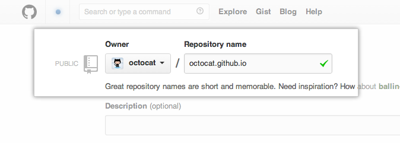

Prepare GIT repository¶
Create the main GitHub repository¶
First of all, on the new repository screen, you need to create a repository with a special name to generate your website.
Your website’s files will live in a repository named username.github.io (where “username” is your actual GitHub user name). To begin setting up your site, you have to open the Settings tab. You’ll see the GitHub Pages section near the bottom. Click the choose a theme button to start the process of creating your site. Then choose a theme from the list.

Thereafter, your website will be accessible at https://username.github.io
For now we dont want to use GitHub pages in this way. So we’ll leave the main repository out and come back to it later.
Note
If you really want to test your website, you can push an index.html file at the root of the master branch and go to you website url (https://username.github.io)
Organize documentation your repository¶
Here, what we will do, is to create another repository that will be a child of the “main” repository. The objective is to have a repository by written documentation.
For example, imagine that we want to write a documentation on python and another on ruby. The documents will be respectively accessible at https://username.github.io/python and https://username.github.io/ruby .
Note
We therefore respect the following structure : https://username.github.io/documentation-repository
To respect this structure, we gonna create a new repository named get-started-whith-sphinx.
Next, as the same as the main repository, you have to open the Settings tab and scroll down to GitHub Pages section. Click on the dropdown list and choose master branch.
Your repository is now ready to host your Sphinx documentation !
Note
If you really want to test your website, you can push an index.html file at the root of the master branch and go to you website url (https://username.github.io/your-new-repo)